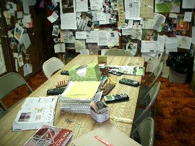
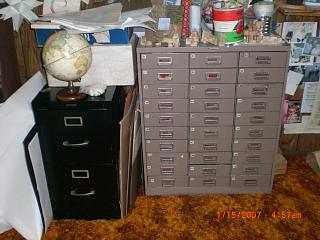
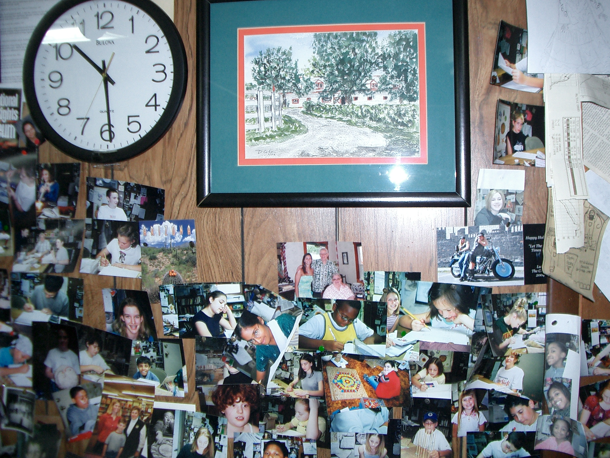
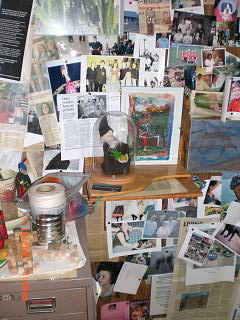
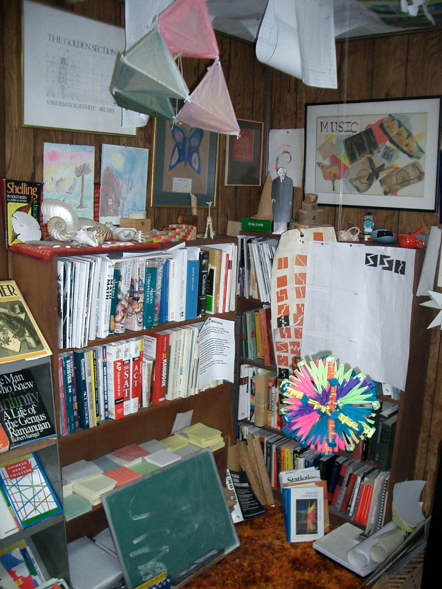
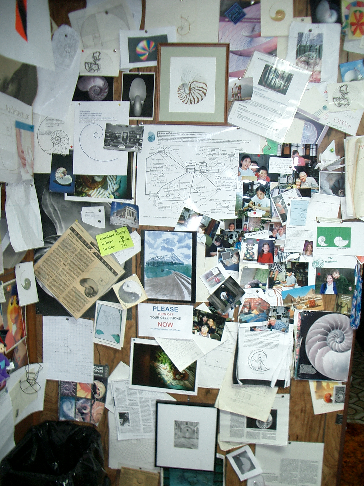

Don's Math Room - 7 views
1. The table about which expectations are high, the students are all different, we study, ask questions, look for patterns, visualize the math, graph functions, read, play a game like Nim, or Conway's "The Game of Life" or "Racetrack", learn to learn, think about the math, look at a sunflower stalk, and do a problem different ways. Whereas some people have been known to "stand and deliver", a student once told Don he sits and listens- and we have fun!
1.  2. 
2. The 30-draw cabinet at the right in which the draws contain things like: old slide rules, old calculators, color cubes, Cuisenaire Rods, Pattern blocks, attribute blocks, people pieces, supplies (scissors, tape, tacks, stapler..), rubber bands for geoboards, wooden blocks of various shapes & sizes, 10x10 paper squares & 1x10 strips to multiply 12x13 in your head, measuring tools (rulers, hypsometer, angle measurer, map measurer, miras,..), guess my rule cards, tangrams, counters, rotograms,.. On top of this cabinet are cylindrical cans, bottles, a cone of string, shapes made out of white rods that where then doubled and tripled in each length to compare the volume ratios, blocks to make (A+B)3 ,.. The black file cabinet contains folders kept up to date by students who don't have a notebook. On top of the black cabinet is a globe and a bag of white cuisenaire rods (2000 of which were purchased from Learning Resources who imported them from China)- used by students to make patterns, and the 7 Soma pieces.
3. Don's watercolor painting of a horse farm in KY. A photograph of Martin Luther King is at upper left but not seen here, and photos of former students.
3.  4. 
4. You can see the Diorama made by Don's son Brian containing the figurine of the old mathman (made by Don's granddaughter Tara), with a painting Tara and Don did of the old mathman's house in the woods..all from a story Tara wrote for 10th grade geometry class about the search for the golden pineapple by the Princess (Tara, of course).
5. Bookcases- with math dictionaries, Martin Gardner's books, W.W. Sawyer's books, books from Russia, AHME problem books, Polya's books on problem solving, textbooks from Japan, Korea, Thailand, Germany, UK, & US, SAT, ACT, AP Calc prep books, AHME test problem books, biographies of Ramanujan and M.C. Escher, Space Mathematics, a Handbook of Chemistry and Physics, +, Don's sons' art works, half and whole Nautilus shells, patterns with Cuisenaire rods, a model of a giraffe, Kathryn's 2 paintings given to Don, ways students cut a square into 2 congruent pieces, a Hoberman sphere, part of a great stellated dodecahedron made by Don, a scale in kgs, +, -, *, / & 100 cards, Napier's bones, a chalkboard,+
5. 
6. The ceiling - which shows patterns on a 12-dot circle, on 36-dot circle, tessellations using gummed shapes from Scotland, enlargements using a pantograph, a Pythagorean tree like some made at I.E.S., drawing made from a linkage, Bucky's dome house, ++
6.
7. the Nautilus shell wall- a Nautilus shell made in Origami (not shown) by Shigeru in Japan, sent to Don as a gift, Don's watercolor painting of a Nautilus shell (his logo came from this- on his books, CD's and website), articles about the shell, problem from Don's worksheet book about the shell's growth, a Mathematica polar graph of the equation of the Nautilus and a rubbing of the shell compared (green middle-right below), a world map on a Nautilus, postcards of shells and spirals sent to Don, Don's poster- flowchart "A Map to Calculus" (now clickable), the San Diego Chicken, a handmade spiral (middle-top), a 3D wire graph of y=2x - 1 from The Tower Puzzle (left-bottom), photos of students from afar, a painting that Don and another granddaughter Tessa did, paintings of Nautilus shells by Don's teacher-friend from Shreveport, LA given to Don when she visited. Why the Nautilus shell? Because it is beautiful and is a mathematical curve (spiral)!
7. 
Missing from the pictures above is Don's worktable with a lamp, computer, scanner, webcam (used with students from afar), printer, and telephone.